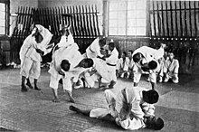
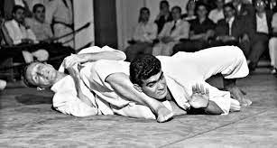
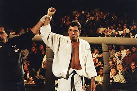

Jiu Jitsu, originally romanized as Ju Jutsu, has its beginnings in traditional japanese combat and existed
in many forms from the 8th century onwards. However, it wasn't until the 18th century that Jiu Jitsu began
to resemble the practice as it is known today. At this time the prevalance and importance of armed and
armored combat started to wane and jiu jitsu became a fighting system based on techniques between two
unarmed individuals, it focused on throws and holds as opposed to the striking emphasized in many other
martial arts. This emphasis is evident even in the name Jiu Jitsu which is often translated as "the gentle
art" due to its (relatively) non violent nature when compared to striking arts.
The next stage in Jiu Jitsu's evolution took place when Jigoro Kano strove to make a competive sport out of
the more traditional art. Judo also heavily featured throws, takedowns, and pins and eventually became an
Olympic sport.

Move to Brazil
Arguably the most famous form of Jiu Jitsu today is Brazilian Jiu Jitsu or as it is more commonly known,
BJJ. This next stage of the art came about when Japanese immigrants to Brazil introduced Judo to the local
population. The Gracie brothers Carlos, Oswaldo, Gastao Jr., George, and Helio took the throw and takedown
heavy art of Judo and adapted it to also incorporate more ground fighting, positional control, and
submissions. Carlos Gracie is on record as saying that he was no good at Judo since he was too small and
weak and therefore had to adapt the art to allow him to fight larger oppents. The Gracie family is largely
credited with inventing the modern form of Jiu Jitsu although recent looks at the Brazilian National
Archives have started to question this narrative. Regardless of origin, it was the Gracie family who took
jiu jitsu to the next stage in its journey; the United States...

Introduction to the US and Spread around the Globe
After matriculating into a modern art focused on functionality under the Gracies it was now time for Jiu
Jitsu to prove efficacy versus other combat styles. The Gracies started challenging all comers to test their
new creation. They competed in an early form of Mixed Martial Arts (MMA) popular in Brazil at the time known
as Vale Tudo. They had quite a deal of success but knew that if they remained in Brazil their Jiu Jitsu
would be poplular in Brazil but if they could popularize it in the US it would grow throughout the world.
Towards this end they were instrumental in organizing the first Ultimate Fighting Championship in 1993.
Royce Gracie, Helio's son, competed and won against fighters of myriad backgrounds. The rest is, as they
say, history. After the success of the early UFCs Brazilian Jiu Jitsu grew rapidly in popularity and is now
an integral part of modern Mixed Martial Arts fighting.
The popularity of Jiu Jitsu grew in lock step with the rise of the UFC and is now one of the most popular
martial arts in the world. Its growth in the US was also helped by its many similarities to high school
(folkstyle) and collegiate wrestling. It has continued to grow around the world and thanks to the advent of
the internet age. Its techniques are rapidly developing as well, incorporating aspects from Sambo, Shoot
Wrestling, and other forms of grappling as well as new innovations coming out of a burgeoning international
competive Jiu Jitsu community.

Differences Between Contemporary, Brazilian, and Traditional Jiu Jitsu
As with the growth, development, and fragmentation of anything Jiu Jitsu has changed a lot throghout the
course of its history and even today there is a growing gap between what the Brazilians brought with them
and what is increasingly being practiced in the US. First off, what seperates the original Japanese ju-jutsu
and judo is the focus on competition and sport. Likewise, the Brazilians emphasized what would be most
effective against all body types performed by any body type as well as testing against all challengers. The
trend that is happening now in the US focuses more on competition, has less emphasis on the traditional
hierarchy structures such as belts and ranks, and is open to new techniques and innovation as long as it is
effective. One other main point of difference is that competing without the Gi (the traditional robes worn
in many martial arts) is becoming more and more popular and promotes a more agressive and explosive style.